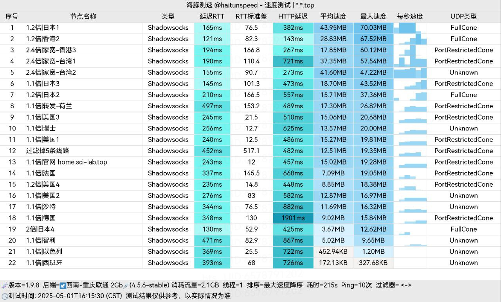

瀚海舟
付费机场推荐
付费机场推荐
*此页面为赞助商推广广告，为公益推广，项目作者不会从中获利，所有利润将全部捐赠给 SDGs 或赠送给作者的朋友。支持本项目可以通过此邀请码注册账号，选择套餐购买。
2025年6月2日更新
2025年6月2日更新
🎁1元试用套餐🚀
泥土
¥ 30 /半年付
流量：50GB
速度限制：Unlimited
同时在线设备：Unlimited
流量 4 CNY 重置
支持多平台使用
圆石
¥ 30 /季付
流量：100GB
速度限制：Unlimited
同时在线设备：Unlimited
流量 8 CNY 重置
支持多平台使用
铁块
¥ 45 /季付
流量：200GB
速度限制：Unlimited
同时在线设备：Unlimited
流量 10 CNY 重置
支持多平台使用
金块
¥ 30 /月付
流量：400GB
速度限制：Unlimited
同时在线设备：Unlimited
流量 12 CNY 重置
支持多平台使用
钻石块
¥ 45 /月付
流量：600GB
速度限制：Unlimited
同时在线设备：Unlimited
流量 15 CNY 重置
支持多平台使用
石英块
¥ 70 /月付
流量：1000GB
速度限制：Unlimited
同时在线设备：Unlimited
流量 20 CNY 重置
支持多平台使用
远古残骸
¥ 130 /一次性
流量：750GB
速度限制：Unlimited
同时在线设备：Unlimited
流量不限时使用
支持多平台使用
尘封的历史
¥ 200 /一次性
流量：1000GB
速度限制：Unlimited
同时在线设备：Unlimited
流量不限时使用
支持多平台使用
2025年6月2日更新
美国1 | 实验性 | x0.1 倍率